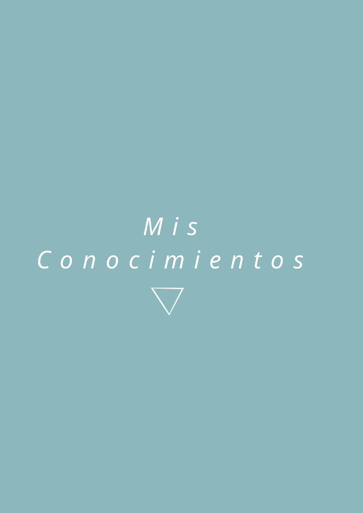
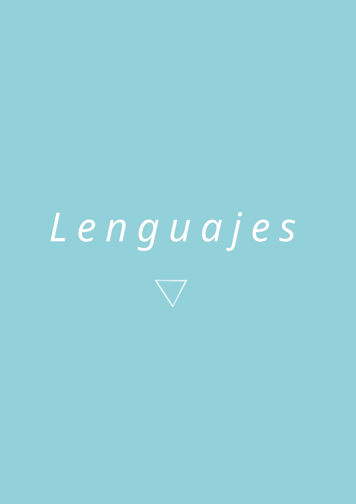
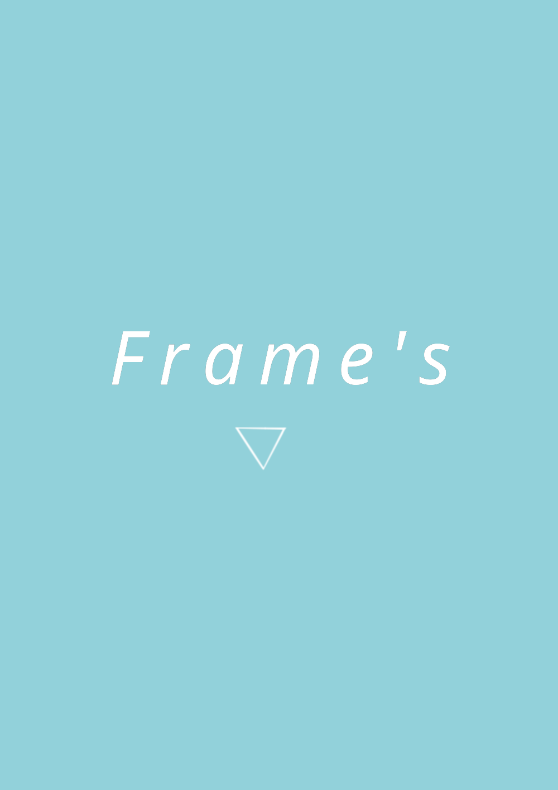
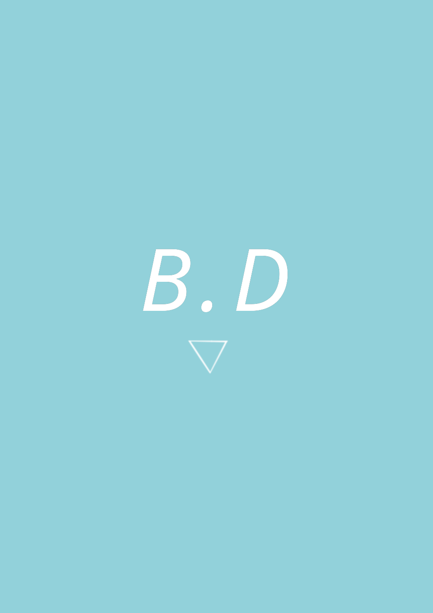
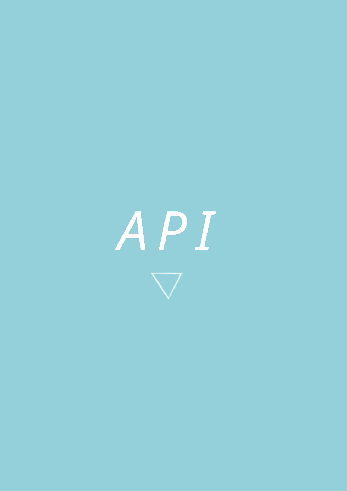
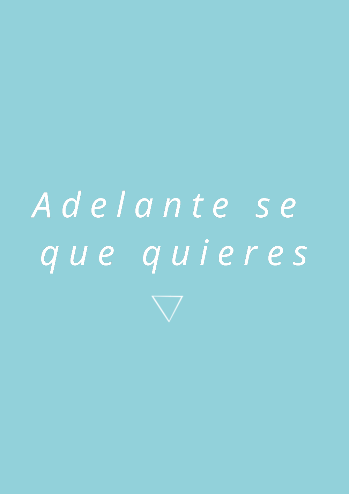

¡Hey Soy Delvis!
Soy un muy reciente aprendiz de Desarrollo web,
iniciado en este mundo por las ganas de aprender un mundo totalmente nuevo, tan extenso
como las ganas de dormir de quien lea esto.
Por ahora soy solo un novato y te invito a ver las tecnologias que conozco por los momentos:

Estas tecnologias son:
HTML CSS Pre-procesador SASS Git/GitHubAnd The Winter is Comming...
Por si estabas curioso, las cosas no acabaran allí, pues hay todo un
camino de tecnologias por aprender para mi, y asi poder
conquistar tu interes de formas cada vez mas profesionales.
Las Tecnologias que ire aprendiendo son:

Lenguajes de Programación:
JavaScript PHP Python

Frameworks:
Tailwind Laravel React Express

Bases de Datos:
MongoDB MySQLOtras Tecnologias:
CMS: WordPress TypeScript Bootstrap

APIs:
Rest JSON SOAP
